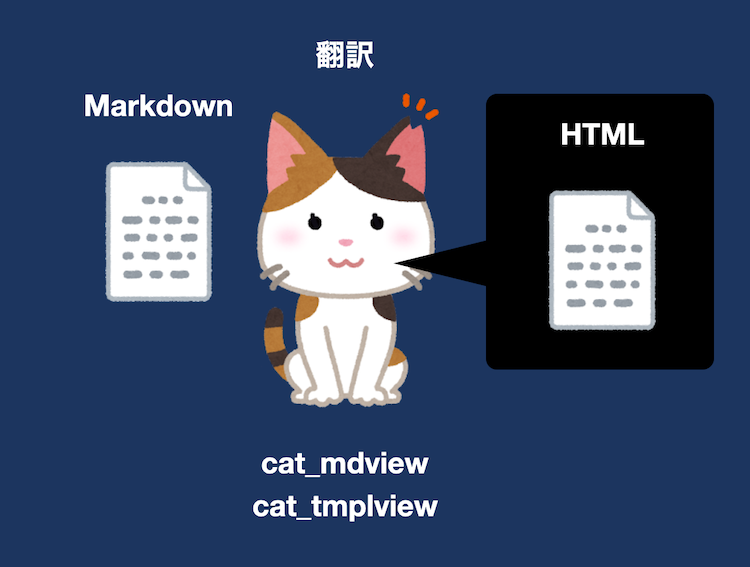
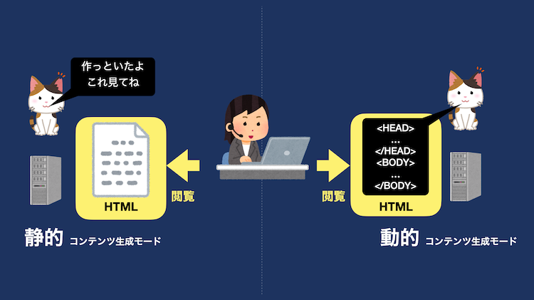
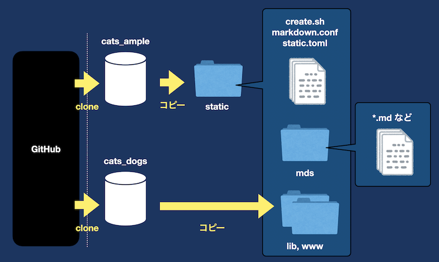
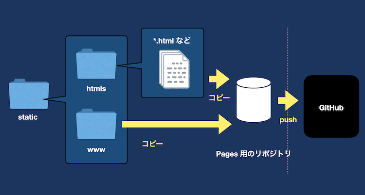
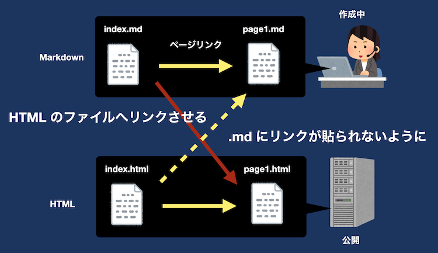
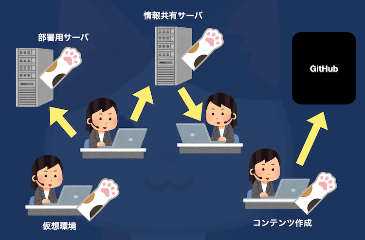

「サーバ不要（無料）なホームページの作り方 ~ cats_dogs 編 ~」では、cat_mdview を用いて、簡単にホームページが作成できることを紹介しました。
Web サーバを用意せず、代わりに GitHub Pages を活用することで、手軽にホームページが作成できることがメリットの一つです。
また、コンテンツの生成を cat_mdview の実行だけで済んでしまうお手軽さです。
本記事で説明する「コンテンツの作成」は、Windows や Linux、MacOS であっても構いません。
ここでは、具体的にどのようにすればよいか？の方法を示すとともに、cats_dogs の機能についても解説していきます。
まずは、cats_dogs の機能について解説します。
cats_dogs は、Markdown で記述されたファイルを、HTML の形式に翻訳してくれるアプリでした。
この「翻訳」の機能を備えているのが、主に cat_mdview と cat_tmplview です。

この「翻訳」には2つのモードがあります。
雑に説明すると、静的・動的コンテンツ生成モードの違いは、コンテンツの実体を 作る or 作らない の違いです。
このモードの切り替えは、それぞれのモジュールのオプションである -d を使います。
-d を付けずに実行した場合は、動的コンテンツ生成モードです。
つまり、以前に解説した「Markdown 描画アプリの解説するよ」などは動的コンテンツ生成モードです。
一方で、-d を付けて実行した場合は、静的コンテンツ生成モードとなります。
もう少し具体的に説明すると、以下のような違いがあります。
これは、クライアント（コンテンツ閲覧者）とサーバ（Web サーバ）の図を比較するとわかりやすいです。

つまり、事前にコンテンツを用意したい場合には、静的コンテンツ生成モードを用います。
また、閲覧要求（リクエスト）が届いてから、コンテンツを都度生成させる場合には、動的コンテンツ生成モードを用います。
モードの使い分けは、cats_dogs を活用するシステムの設計に依存します。
一概にこれが良いとは言い切れませんので、自分たちで選んで使うことが大切です。
今回は GitHub Pages を使うため、どうしてもコンテンツを事前に用意する必要があります。
そのため、今回紹介する方法は、静的コンテンツ生成モードを使います。
ここでは、動的・静的（コンテンツ生成）モードについて、具体的に説明します。
-d オプションを付けて実行すると静的モードになるのですが、これは HTML を標準出力（STDOUT）に吐き出す機能です。
先ほどは雑に説明しましたが、
つまり、HTML ファイルを作成するには、-d オプションを付けて実行した結果（STDOUT に出力された HTML）を、ファイルに書き込むことが必要です。
例えば、以下のように cat_mdview を実行します。
cat_mdview -d [PATH] [CONFIG] > [OUT FILE]
ここでは、細かなパラメータの説明は控えますが、大事なのは > です。
扱っている環境によって、別の表現もできますが、Linux では > が「標準出力の結果をファイルに出力する」という命令になります。
このように cats_dogs を実行することで、HTML ファイルを出力することができます。
そろそろ、実際の使い方について具体的にしていきましょう。
ここでは、すでにコンテンツにしたい Markdown ファイルを作成していることを前提とします。
つまり、あとは HTML に変換するだけ という状態です。
あとは、cat_mdview や cat_tmplview を用いて -d を付けて実行するだけですが、先程示したコマンドの [PATH] や [CONFIG] を埋めなければなりません。
詳しい説明は、cats_dogs の仕様書を読む方が良いと思います。
今回は、できるだけ考えることを諦める方法を提示します。
それが、サンプルです。
これは構築支援動画で使用したものも含まれていますが、static というフォルダに静的コンテンツ生成モードの設定ファイルなどが置いてあります。
これを以下の手順でコピーしたりすると、bash create.sh を実行するだけで変換してくれます。
※Windows の方は「Git Bash」を利用して実行してください。
まずは、事前準備として以下の3つを実施してください。
cats_dogs のビルドには、Go のインストールが必要になります。
Go のインストールができたら、cats_dogs の build.sh を実行することで、cat_mdview を含む全てのモジュールがビルドできます。
ここからは、Markdown ファイルから HTML ファイルへ変換するためのコマンドを実行するための準備を説明します。
以下を、実施してください。
1 については、ビルドして作成した cat_mdview や cat_tmplview を実行できるようにパスを通してください。
2については、以下に、どこから何をコピーしてくればよいかを説明します。

それでは、上図の左から順に説明していきます。
cats_dogs と同様に GitHub から cats_ample のリポジトリを git clone してください。
cats_ample のリポジトリから、static というフォルダを、作業を行うフォルダにコピーしてください。
この static というフォルダには、create.sh、markdown.conf、static.toml が既に格納されています。
cats_dogs は 事前準備 の段階で用意しているため、www と lib のフォルダを、static フォルダの中にコピーしてください。
ここで、static.toml に記述されている url_lib_path を編集する必要があります。
編集を行う前に、GitHub Pages では二種類の公開方法があります。
この二種類の方法は、用途に応じて選択してください。
どちらの方法も、Web ページを公開するということは同じなのですが、URL のパスが異なります。
たとえば、プロジェクト用のサイトを選択した場合には、リポジトリ名と同じパスが作成され、コンテンツがそのパスの配下に配置されます。
詳しくは GitHub の公式ドキュメントを参照ください。
では、この二種類の選択によって、URL のパスが変わる可能性があることがわかりました。
static.toml の url_lib_path の編集は、以下の通りに行ってください。
/YOUR_REPO_NAMEの文字列を削除する。YOUR_REPO_NAME を、GitHub Pages で使用するリポジトリの名称に変更する。これで、準備は完了です。
mds というフォルダも、static の中に書いてありますが、これはコンテンツの元になる Markdown ファイルや画像などの素材をまとめるフォルダです。
そのため、mds フォルダやその中身は、皆さんが作成してください。
準備ができたので、Markdown でコンテンツの元を作り終えた後の説明をします。
cat_mdview にはパスを通しているので、以下のように create.sh が実行できる状態になっています。
bash create.shこれを実行すると、static フォルダの中に htmls というフォルダが出来上がります。
この中には、Markdown ファイルを HTML に変換したファイルが作成されます。
あとは必要なファイルを Pages 用のリポジトリにプッシュし、Pages で公開するだけです。
サンプルの設定ファイルに記述された内容は、Pages 用のリポジトリ構成を、以下のように想定しています。
下図は Pages で公開するためのリポジトリ構成を示しています。

リポジトリに格納するものは、作成された HTML ファイルや画像などの素材です。
また、表示に必要な CSS や JavaScript などのファイルは、www フォルダに入っているため、このフォルダも必要です。
これらのファイルやフォルダを、Pages で公開するためのリポジトリへ、コピーしてください。
※ここで紹介した構成以外にする際は、static.toml の内容を修正する必要があります。
最後に、コンテンツを作成する上での注意点を紹介しておきます。
この注意点は、特別なものではなく当たり前のことなのですが、忘れてしまいがちなのであえて強調しておきます。
Markdown ファイルを作成中に、忘れがちになってしまうのが、リンク先のファイルの拡張子です。
コンテンツの作成は、Markdown ファイルであるため、拡張子が .md や .markdown なはずです。
しかし、実際に作成されるファイルは HTML ファイルであるため、リンク先は .html である必要があります。

コンテンツ作成のために Markdown ファイルを書いている最中は、書くことに専念しているため、よくリンク先が .md のままになっていたりします。
リンクの確認をしながら作成したいと考えている方は、どこかのタイミングで .html に書き換える必要があります。
書いている最中と、作成されるコンテンツの拡張子が一致しないために起こりうる事なので、紹介しておきました。
cats_dogs では、静的・動的に HTML を生成する機能があることを紹介しました。
また、サンプルを使って、楽に GitHub Pages でコンテンツを公開する方法を説明しました。
静的モードでは、リンク先に指定する拡張子に注意することが必要です。
一方で、動的コンテンツ生成モードでは、この注意点は考慮する必要がありません。
公開するまでにどのようなレイアウトになるか確認したい方は、仮想環境上に nginx などを用意するなどもできます。
今回は GitHub Pages を活用する方法を紹介しましたが、どの場面で、どのように使うかによって、cats_dogs のモジュールを使い分けてみてください。
そうすると、いつの間にか「猫の手を借りる」状況が出来上がるはずです。
